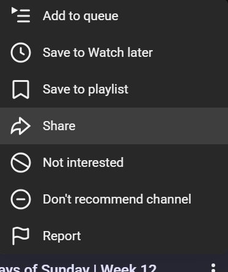
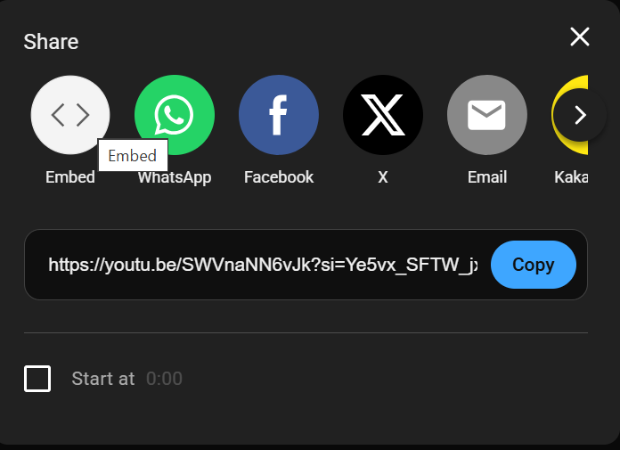
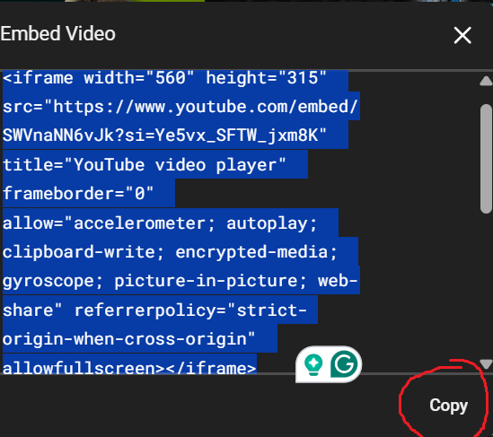
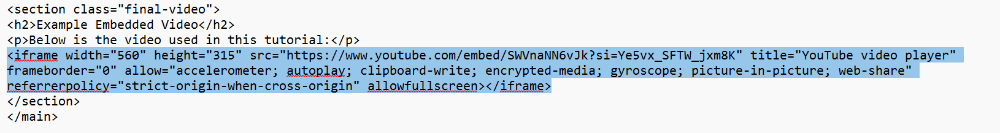

<link rel="stylesheet" href="style.css" />


<header>
<h1>How to Embed a Service‑Hosted Video into a Website</h1>
<p>This tutorial will walk you through embedding a video—such as one from YouTube—into your website using HTML and an iframe.</p>
</header>


<main>
<section class="step">
<h2>Step 1 — Locate the Video</h2>
<p>Go to the hosting platform (YouTube, Vimeo, etc.) and navigate to the video you want to embed into your website.</p>

</section>


<section class="step">
<h2>Step 2 — Click the Share Button</h2>
<p>Below the video, click the <strong>Share</strong> button—this reveals sharing and embedding options.</p>

</section>


<section class="step">
<h2>Step 3 — Select Embed</h2>
<p>In the sharing menu, choose <strong>Embed</strong>. This will generate HTML iframe code for your website.</p>

</section>


<section class="step">
<h2>Step 4 — Copy the Embed Code</h2>
<p>Copy the iframe embed code provided. This contains the video link and attributes.</p>

</section>


<section class="step">
<h2>Step 5 — Paste the Code into Your HTML File</h2>
<p>Open your website's HTML document and paste the embed code where you want the video displayed—usually inside the <code>&lt;main&gt;</code> section.</p>

</section>


<section class="step">
<h2>Step 6 — Save and Preview Your Page</h2>
<p>Save your HTML file and refresh your browser. The video should now be embedded and playable on your webpage.</p>

</section>


<section class="final-video">
<h2>Example Embedded Video</h2>
<p>Below is the video used in this tutorial:</p>
<iframe width="560" height="315" src="https://www.youtube.com/embed/56uCjW56HWI?si=bt3InHxkVIeFlBwq" title="YouTube video player" frameborder="0" allow="accelerometer; autoplay; clipboard-write; encrypted-media; gyroscope; picture-in-picture; web-share" referrerpolicy="strict-origin-when-cross-origin" allowfullscreen></iframe>
</section>
</main>


<footer>
<p>&copy; 2025 Gabe Martin — Video Embedding Tutorial</p>
</footer>
